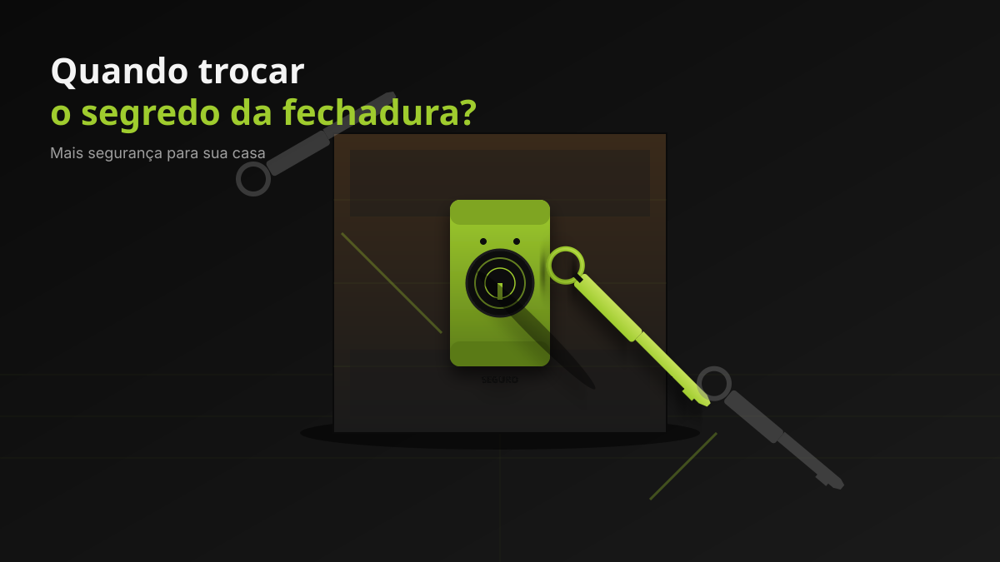

SEGURANÇA
Quando vale a pena trocar o segredo da fechadura
Trocar o segredo é a forma mais rápida e econômica de invalidar chaves antigas — mas nem sempre é a melhor opção. Veja quando vale a pena.

O que é "trocar o segredo"
Toda fechadura tem uma combinação interna de pinos — é isso que faz cada chave abrir aquela fechadura específica e nenhuma outra. Trocar o segredo é alterar essa combinação sem trocar a fechadura em si. Depois do procedimento, todas as chaves antigas deixam de funcionar, e você recebe novas chaves compatíveis com a nova combinação.
Quando trocar o segredo é a melhor escolha
- Você se mudou para um imóvel novo ou alugado e não sabe quem tem cópias das chaves.
- Perdeu a chave recentemente e quer evitar que alguém a use.
- Término de aluguel antes de devolver o imóvel.
- Relacionamento terminou e o ex-parceiro tem cópia das chaves.
- Funcionário antigo teve acesso a chaves de imóvel comercial.
Em todos esses casos, o objetivo é o mesmo: invalidar chaves antigas. Trocar o segredo resolve isso com menos trabalho, menos custo e sem precisar furar a porta.
Quando é melhor trocar a fechadura inteira
Trocar a fechadura (e não só o segredo) é a melhor opção em outras situações:
- Fechadura com defeito físico: trava com dificuldade, chave gira em falso, pino solto, mecanismo gasto.
- Você quer mais segurança: passar de uma fechadura de 2 travas para 3, ou instalar um modelo com chave tetra.
- Fechadura muito antiga ou com aparência comprometida (oxidação, folga excessiva).
- Padrão da fechadura é muito comum: marcas populares são alvos mais fáceis para cópias não autorizadas. A troca do segredo ainda resolve, mas trocar a peça por uma de padrão mais raro é uma camada extra.
Tempo e custo
A troca de segredo é um procedimento simples: geralmente fica pronto em até 30 minutos, dependendo do modelo da fechadura. O valor é menor do que o de uma fechadura nova, e vem acompanhado de 3 chaves novas (chaves adicionais sob orçamento).
Como funciona na prática
- O chaveiro abre a fechadura com a chave atual (ou usando técnica específica se a chave foi perdida).
- Os pinos internos são desmontados e remontados em uma nova combinação.
- Novas chaves são cortadas de acordo com a nova combinação.
- Você testa todas as chaves no ato, antes do chaveiro sair.
Quer trocar o segredo da sua fechadura?
Atendimento no Barra Shopping. Ligue ou chame no WhatsApp para agendar.
Perguntas frequentes
É possível trocar o segredo sem ter a chave atual?
Sim. O chaveiro consegue abrir a fechadura por técnica e, em seguida, montar a nova combinação.
A troca de segredo danifica a fechadura?
Não, quando feita por profissional. É um procedimento limpo que mantém a integridade da peça.